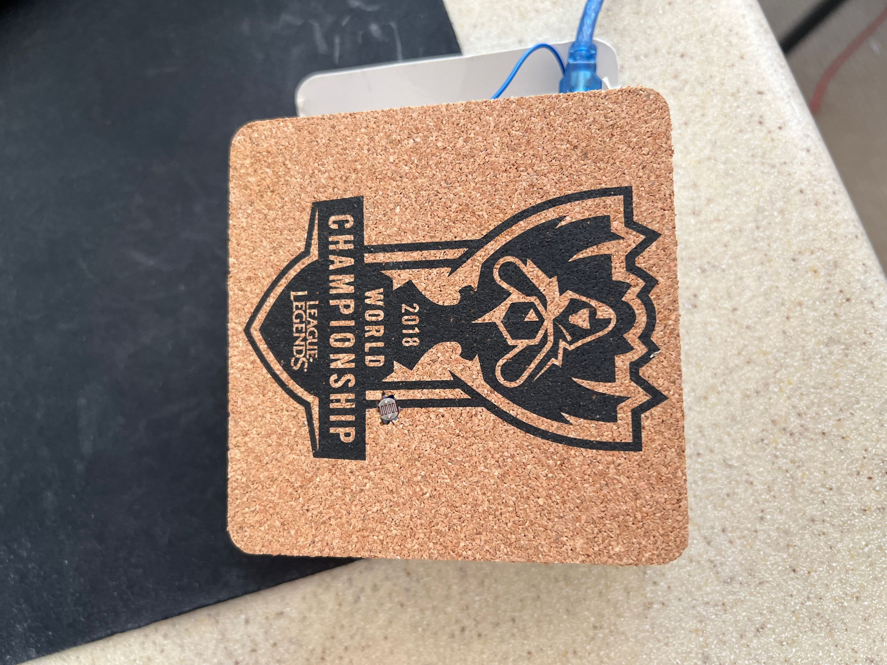
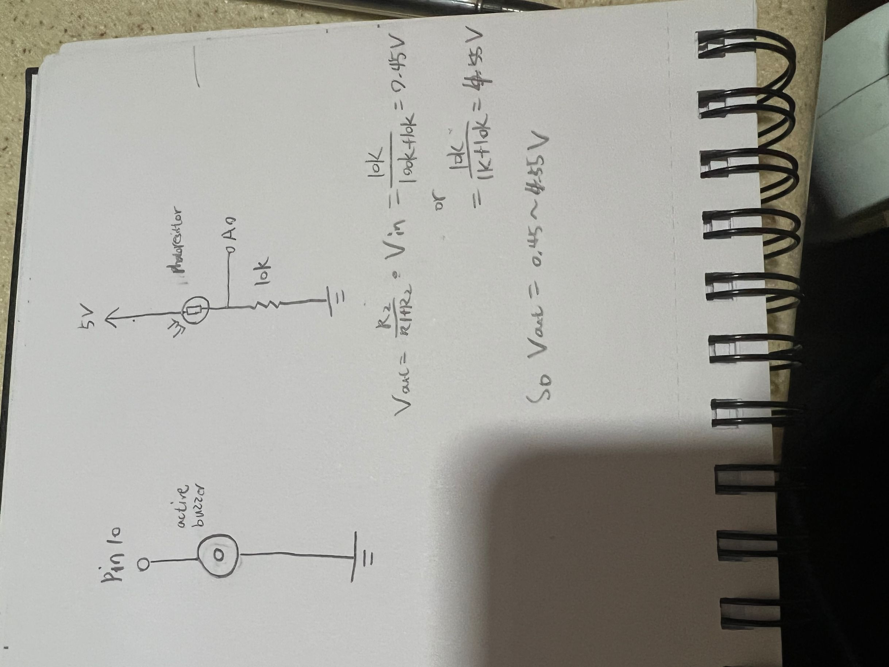
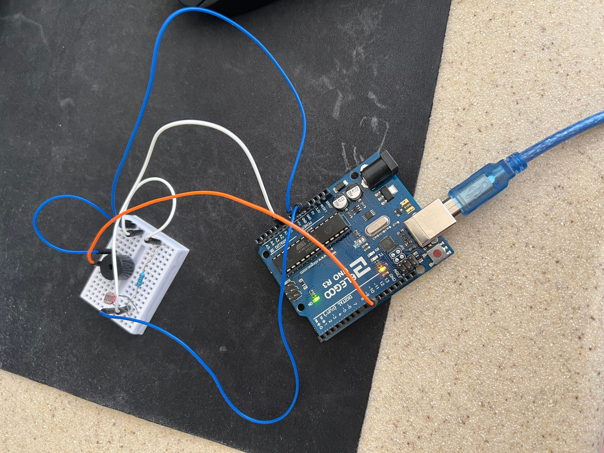

Project concept: A coaster that reminds people of drinking water every half hour. If the user doesn’t take the cup off the coaster it will keep beeping regularly.
Prototype Mechanism: The prototype uses a photoresistor to detect the light changes above the coaster. When it detects a cup on the coaster it starts timing, after 30 minutes the coaster will beep to remind the user to drink.

Prototype photo
This is the the video demo!
Circuit's Schematic
Photo of the Circuit
Firmware:
int buzzer = 10;//the pin of the active buzzer
int timer = 0; // countdown timer
void setup() {
// put your setup code here, to run once:
// initialize the pin 10 as an output:
pinMode(10, OUTPUT);
// initialize pin 11 as an input:
pinMode(A0, INPUT);
// initialize serial communication at 9600 bits per second:
Serial.begin(9600);
}
void loop() {
int value = analogRead(A0);
Serial.println("Analog value : ");
Serial.println(value);
delay(250);
if (value <= 20){ // if light value is below 20
for (int i = 0;i < 1800;i++){ // wait for 1800 sec, 30min to beep
// for (int i = 0;i < 5;i++){ //test code, 5 second countdown
delay (1000); // delay 1 sec
value = analogRead(A0); // detect light value
timer++; // timer + 1 sec
if (value > 20){ // cup is removed, break the loop, reset timer
timer = 0;
break;
}
}
if (timer == 1800){
// if (timer == 5){ //test code, 5 second countdown
while (1){ // if the light value is still under 20, means the cup is still there, so keep beeping every 2 min.
digitalWrite(buzzer,HIGH);
delay(1);//wait for 1ms
digitalWrite(buzzer,LOW);
delay(2000); // wait for 2 sec
value = analogRead(A0); //detect light value
if (value > 20){ // cup is removed, break the loop, reset timer
timer = 0;
break;
}
}
}
}
}